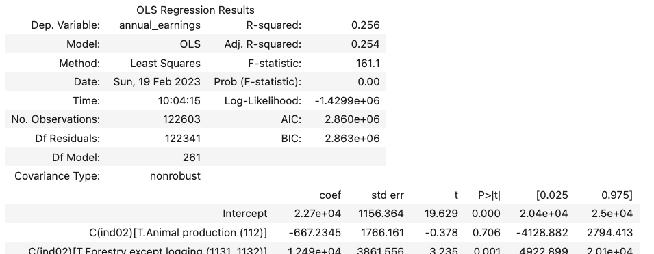
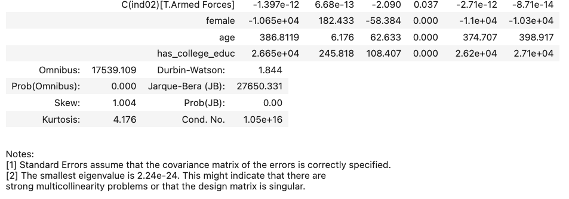
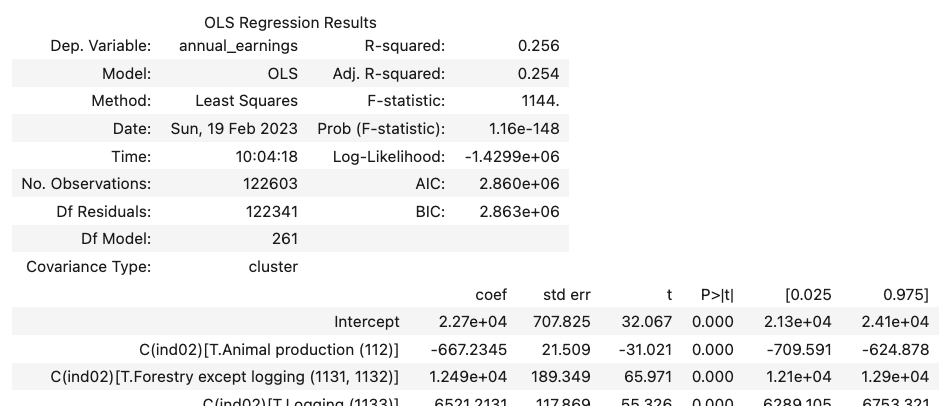
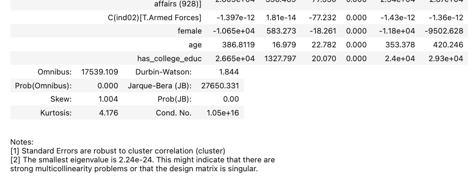

Fixed Effects: Indicator Variables for Groups#
One common use of indicator variables are as fixed effects. Fixed effects are used when our data as a “nested” structure (we think individual observations belong to groups), and we suspect different things may be happening in each group.
For example, suppose we have a dataset of student test scores, and students are all grouped into different schools; or perhaps we have data on earnings and gender across US cities. In these examples, individual observations can be thought of as being grouped into schools or cities.
One option with this kind of data is to just ignore the groups. For example, if we want to know about differences in the academic performance of minority children across the school system, then we might not want to add controls for students’ schools because we think that part of way race impacts performance is though sorting of minority students into worse schools. If we added school fixed effects, we’d lose that variation.
But suppose we were interested in understanding whether school administrators treat minority children differently, and whether this affects academic performance. Principles, for example, may be more likely to suspect Black children than White children. If that were our interest, then what we really want to know about is how race impacts academic performance among students in the same school. And that’s where fixed effects are useful – they let us control for group-level effects (like the fact all children in one school might tend to get lower grades) so we can focus on explaining intra-group variation (differences among children at the same school).
In this regard, fixed effects are analogous in purpose to hierarchical models, though they are slightly different in implementation (differences between fixed effects and hierarchical models are discussed here).
Implementing Fixed Effects#
To illustrate, let’s try and estimate how gender impacts earnings in the US using data from the US Current Population Survey (CPS) on US wages in 2019. We’ll begin with a simple model of earnings:
import pandas as pd
# Load survey
cps = pd.read_stata(
"https://github.com/nickeubank/MIDS_Data/blob/"
"master/Current_Population_Survey/morg18.dta?raw=true"
)
# Limit to people currently employed and working full time.
cps = cps[cps.lfsr94 == "Employed-At Work"]
cps = cps[cps.uhourse >= 35]
# Annual earnings from weekly
cps["annual_earnings"] = cps["earnwke"] * 48
# And create gender and college educ variable
cps["female"] = (cps.sex == 2).astype("int")
cps["has_college_educ"] = (cps.grade92 > 43).astype("int")
import statsmodels.formula.api as smf
smf.ols("annual_earnings ~ female + age + has_college_educ", cps).fit().summary()
| Dep. Variable: | annual_earnings | R-squared: | 0.170 |
|---|---|---|---|
| Model: | OLS | Adj. R-squared: | 0.170 |
| Method: | Least Squares | F-statistic: | 8393. |
| Date: | Tue, 04 Mar 2025 | Prob (F-statistic): | 0.00 |
| Time: | 15:43:43 | Log-Likelihood: | -1.4365e+06 |
| No. Observations: | 122603 | AIC: | 2.873e+06 |
| Df Residuals: | 122599 | BIC: | 2.873e+06 |
| Df Model: | 3 | ||
| Covariance Type: | nonrobust |
| coef | std err | t | P>|t| | [0.025 | 0.975] | |
|---|---|---|---|---|---|---|
| Intercept | 3.639e+04 | 296.455 | 122.766 | 0.000 | 3.58e+04 | 3.7e+04 |
| female | -1.168e+04 | 170.390 | -68.540 | 0.000 | -1.2e+04 | -1.13e+04 |
| age | 407.7144 | 6.406 | 63.650 | 0.000 | 395.160 | 420.269 |
| has_college_educ | 3.054e+04 | 239.482 | 127.513 | 0.000 | 3.01e+04 | 3.1e+04 |
| Omnibus: | 18030.472 | Durbin-Watson: | 1.805 |
|---|---|---|---|
| Prob(Omnibus): | 0.000 | Jarque-Bera (JB): | 27634.350 |
| Skew: | 1.059 | Prob(JB): | 0.00 |
| Kurtosis: | 3.963 | Cond. No. | 159. |
Notes:
[1] Standard Errors assume that the covariance matrix of the errors is correctly specified.
In this model, we’re getting estimates of how education and gender explain variation across all Americans.
But in this dataset, we also have a variable that tells us the industry in which each respondent is employed. If we want to understand the relationship between gender and income through both workplace bias and sectoral sorting, we can use the model above. But suppose we want to estimate wage discrimination in the workplace after controlling for the industry into which someone chooses to work. In other words, we want to know about the impact of gender on wages within industries.
To do so, we can add an indicator for each respondent’s industry (in the ind02 variable):
Then we can run the following regression:
smf.ols(
"annual_earnings ~ female + age + has_college_educ + C(ind02)", cps
).fit().summary()
which will generate output that will look approximately like this (note your output will be VERY long—I’m omitting all the industry coefficients for space. We’ll talk later about how to suppress those in your output):

.
.
.

Voilà! What you’ve just estimated is no longer the relationship between gender and income across all Americans, but rather the relationship between gender and income within each industry.
To be clear, fixed effects aren’t mathematically different from adding a normal control variable. One could say that adding has_college_educ means that we’re now estimating the relationship between gender and income among college educated and among non-college educated. Mechanically, fixed effects are just additional indicator variables. But because we often use them for groups, thinking about the fact that, when added, one is effectively estimating variation within the groups specified by the fixed effects is a powerful idea.
Perhaps no place is this more clear than in full panel data, where you have data on the same entities over time. In a panel regression, the addition of entity fixed effects allow you to difference out any constant differences between entities, and focus only on changes within each entity over time. This even works for people! In a panel with individuals observed over time, adding individual fixed effects means you’re effectively controlling for anything constant about each individual (things that don’t change over time), and now you’re just studying changes over time for each individual.
Clustering#
When working with fixed effects, however, it’s also often a good idea to cluster your standard errors by your fixed effect variable. Clustering is a method for taking into account some of the variation in your data isn’t coming from the individual level (where you have lots of observations), but rather from the group level. Since you have fewer groups than observations, clustering corrects your standard errors to reflect the smaller effective sample size being used to estimate those fixed effects (clustering only affects standard errors – it has no impact on coefficients themselves. This is just about adjustments to our confidence in our inferences).
Clustering is thankfully easy to do—just use the get_robustcov_results method from statsmodels, and use the groups keyword to pass the group assignments for each observation.
(R users: as we’ll discuss below, I think the easiest way to do this is to use the plm package.)
TWO IMPORTANT IMPLEMENTATION NOTES:
First, if you’re using formulas in statsmodels, the regression is automatically dropping observations that can’t be estimated because of missing data, so you have to do the same before passing your group assignments to-
get_robustcov_results—otherwise you’ll get the error:
ValueError: The weights and list don't have the same length.
because the number of observations in the model doesn’t match the number of observations in the group assignment vector you pass!
Whatever you pass to
groupshas to be a numeric array of group identifiers. If you don’t, you’ll get an error like:
TypeError: '<' not supported between instances of 'float' and 'str'
model = smf.ols(
"annual_earnings ~ female + age + has_college_educ + C(ind02)", cps
).fit()
# Drop any entries with missing data from the model
fe_groups = cps.copy()
for i in ["annual_earnings", "female", "age", "ind02", "has_college_educ"]:
fe_groups = fe_groups[pd.notnull(fe_groups[i])]
# Convert `ind02` categorical into group codes by
# pulling codes used in its categorical encoding.
# If you have a string instead of a categorical,
# just make it a categorical first with `pd.Categorical()`
group_codes = fe_groups.ind02.cat.codes
group_codes.head(5)
2 222
3 201
4 220
6 158
17 141
dtype: int16
model.get_robustcov_results(cov_type="cluster", groups=group_codes).summary()

.
.
.

As you can see, while our point estimates haven’t changed at all (the coefficient on female, for example, is still \(\sim\)-10,650), we have increased the size of our standard errors. The SE on female, for example, has gone from 182 without clustering to 583 with clustering.
Computationally Efficient Fixed Effects#
OK, so everything we’ve describe up till here is a reasonable approach to fixed effects, but it has two limitations: our regression output looks terrible, and computing all those intercepts was slow.
This brings us to some of the specialized methods for calculating fixed effects. It turns out that if you aren’t interested in the coefficient on each fixed effect, there are much more computationally efficient methods of calculating fixed effects. But to use them, we’ll have to use a different library: linearmodels (installable using conda install linearmodels or pip install linearmodels).
(R users: see note at bottom on doing this in R)
In particular, we’ll be using the PanelOLS function from linearmodels. As the name implies, PanelOLS is designed for linear regression (social scientists call linear regression Ordinary Least Squares, or OLS) with panel data, which is really any form of data organized along two dimensions. Normally a panel has data on many entities observed several times, so the first dimension is the entity dimension, and the second is the time dimension.
In this case, we don’t really have a panel—just nested data—but because fixed effects are commonly used in panels, we’ll use this tool.
The only catch is: you have to use multiindexes in pandas. I know, I hate them too. But the multi-index is required by the library for it to understand what variable constitutes the “group” for which you want to add fixed effects. Basically PanelOLS calls the first level of the multi-index the entity and the second level time. In this case, though, we’ll just make the first level our counties, and the second level individual identifiers, then use entity fixed effects (and clustering).
cps.head()
| hhid | intmonth | hurespli | hrhtype | minsamp | hrlonglk | hrsample | hrhhid2 | serial | hhnum | ... | ch35 | ch613 | ch1417 | ch05 | ihigrdc | docc00 | dind02 | annual_earnings | female | has_college_educ | |
|---|---|---|---|---|---|---|---|---|---|---|---|---|---|---|---|---|---|---|---|---|---|
| 2 | 000110339935453 | January | 1.0 | Unmarried civilian female primary fam householder | MIS 4 | MIS 2-4 Or MIS 6-8 (link To | 0701 | 07011 | 1 | 1 | ... | 0 | 0 | 1 | 0 | 12.0 | Office and administrative support occupations | Health care services , except hospitals | 43344.0 | 1 | 0 |
| 3 | 000110339935453 | January | 1.0 | Unmarried civilian female primary fam householder | MIS 4 | MIS 2-4 Or MIS 6-8 (link To | 0701 | 07011 | 1 | 1 | ... | 0 | 0 | 0 | 0 | 12.0 | Office and administrative support occupations | Administrative and support services | 19200.0 | 1 | 0 |
| 4 | 000110359424339 | January | 1.0 | Unmarried civilian female primary fam householder | MIS 4 | MIS 2-4 Or MIS 6-8 (link To | 0711 | 07111 | 1 | 1 | ... | 0 | 0 | 0 | 0 | NaN | Healthcare practitioner and technical occupations | Hospitals | 60000.0 | 1 | 0 |
| 6 | 000110651278174 | January | 1.0 | Civilian male primary individual | MIS 8 | MIS 2-4 Or MIS 6-8 (link To | 0601 | 06011 | 1 | 1 | ... | 0 | 0 | 0 | 0 | 12.0 | Transportation and material moving occupations | Transportation and warehousing | 32640.0 | 0 | 0 |
| 17 | 007680515071194 | January | 1.0 | Civilian male primary individual | MIS 8 | MIS 2-4 Or MIS 6-8 (link To | 0611 | 06112 | 2 | 2 | ... | 0 | 0 | 0 | 0 | 12.0 | Transportation and material moving occupations | Retail trade | 38400.0 | 0 | 0 |
5 rows × 101 columns
# Move county groups into highest level of multi-index,
# with old index in second level.
# PanelOLS will then see the first level as the `entity`
# identifier.
cps_w_multiindex = cps.set_index(["ind02", cps.index])
cps_w_multiindex.head()
| hhid | intmonth | hurespli | hrhtype | minsamp | hrlonglk | hrsample | hrhhid2 | serial | hhnum | ... | ch35 | ch613 | ch1417 | ch05 | ihigrdc | docc00 | dind02 | annual_earnings | female | has_college_educ | ||
|---|---|---|---|---|---|---|---|---|---|---|---|---|---|---|---|---|---|---|---|---|---|---|
| ind02 | ||||||||||||||||||||||
| Residential care facilities, without nursing (6232, 6233, 6239) | 2 | 000110339935453 | January | 1.0 | Unmarried civilian female primary fam householder | MIS 4 | MIS 2-4 Or MIS 6-8 (link To | 0701 | 07011 | 1 | 1 | ... | 0 | 0 | 1 | 0 | 12.0 | Office and administrative support occupations | Health care services , except hospitals | 43344.0 | 1 | 0 |
| Business support services (5614) | 3 | 000110339935453 | January | 1.0 | Unmarried civilian female primary fam householder | MIS 4 | MIS 2-4 Or MIS 6-8 (link To | 0701 | 07011 | 1 | 1 | ... | 0 | 0 | 0 | 0 | 12.0 | Office and administrative support occupations | Administrative and support services | 19200.0 | 1 | 0 |
| Hospitals (622) | 4 | 000110359424339 | January | 1.0 | Unmarried civilian female primary fam householder | MIS 4 | MIS 2-4 Or MIS 6-8 (link To | 0711 | 07111 | 1 | 1 | ... | 0 | 0 | 0 | 0 | NaN | Healthcare practitioner and technical occupations | Hospitals | 60000.0 | 1 | 0 |
| Truck transportation (484) | 6 | 000110651278174 | January | 1.0 | Civilian male primary individual | MIS 8 | MIS 2-4 Or MIS 6-8 (link To | 0601 | 06011 | 1 | 1 | ... | 0 | 0 | 0 | 0 | 12.0 | Transportation and material moving occupations | Transportation and warehousing | 32640.0 | 0 | 0 |
| ****Department stores and discount stores (s45211) | 17 | 007680515071194 | January | 1.0 | Civilian male primary individual | MIS 8 | MIS 2-4 Or MIS 6-8 (link To | 0611 | 06112 | 2 | 2 | ... | 0 | 0 | 0 | 0 | 12.0 | Transportation and material moving occupations | Retail trade | 38400.0 | 0 | 0 |
5 rows × 100 columns
from linearmodels import PanelOLS
mod = PanelOLS.from_formula(
"annual_earnings ~ 1 + female + age + has_college_educ + EntityEffects",
data=cps_w_multiindex,
)
mod.fit(cov_type="clustered", cluster_entity=True)
---------------------------------------------------------------------------
ModuleNotFoundError Traceback (most recent call last)
Cell In[6], line 1
----> 1 from linearmodels import PanelOLS
3 mod = PanelOLS.from_formula(
4 "annual_earnings ~ 1 + female + age + has_college_educ + EntityEffects",
5 data=cps_w_multiindex,
6 )
7 mod.fit(cov_type="clustered", cluster_entity=True)
ModuleNotFoundError: No module named 'linearmodels'